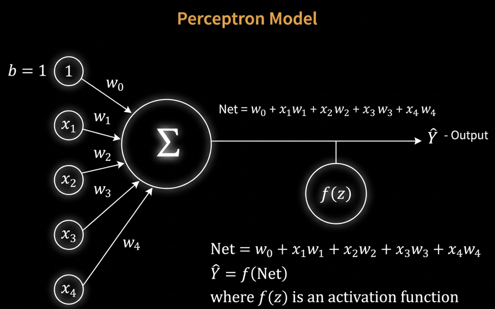

The perceptron is the building block of all deep learning models. The idea of the perceptron is used in all the small to big models in today's deep learning. Knowing how the perceptron works can give you basic insight into the layer calculations we do in the forward pass of deep learning models.
In this article I will quickly introduce you to the idea of the perceptron and the perceptron learning algorithm, and then work out a non-toy example using the perceptron learning model.

A perceptron is a single artificial neuron. It takes multiple input values, multiplies each by a corresponding weight, sums them up (including a bias term), and passes the result through an activation function to produce an output.
Mathematically, for an input vector $\mathbf{x} = [x_1, x_2, \ldots, x_n]$ and weight vector $\mathbf{w} = [w_0, w_1, w_2, \ldots, w_n]$ (where $w_0$ is the bias), the perceptron computes:
$$z = w_0 + w_1 x_1 + w_2 x_2 + \cdots + w_n x_n = \mathbf{w} \cdot \mathbf{x}$$
The output is then:
$$\hat{y} = \text{sign}(z) = \begin{cases} +1 & \text{if } z > 0 \\ -1 & \text{if } z \leq 0 \end{cases}$$
The perceptron learns by updating weights whenever it makes a wrong prediction. The update rule is:
$$\mathbf{w} \leftarrow \mathbf{w} + \eta \cdot (y - \hat{y}) \cdot \mathbf{x}$$
where $\eta$ is the learning rate, $y$ is the true label, and $\hat{y}$ is the predicted label.
The key insight: if the prediction is correct ($y = \hat{y}$), the difference $(y - \hat{y}) = 0$ and no update happens. If the prediction is wrong, the weights shift in the direction that would have produced the correct answer.
We repeat this process for multiple epochs (passes over the training data) until the model converges or we exhaust our iteration budget.
Design a perceptron that decides: Should you interrupt someone during a meeting? (Yes = +1, No = -1)
We have 4 input features (each scored 1–10):
| Feature | Description | Higher means... |
|---|---|---|
| Urgency | How urgent is your point? | More urgent to speak |
| Speaker | How senior/important is the current speaker? | Harder to interrupt |
| Critical | How critical is the topic being discussed? | Harder to interrupt |
| Time Left | How much time is left in the meeting? | More time, less need to rush |
Intuitively, you should interrupt (+1) when urgency is high and the speaker importance, topic criticality, and remaining time are low.
| Urgency | Speaker | Critical | Time Left | Label |
|---|---|---|---|---|
| 9 | 2 | 3 | 2 | +1 |
| 8 | 9 | 9 | 5 | -1 |
| 6 | 4 | 5 | 1 | +1 |
| 3 | 8 | 7 | 8 | -1 |
| 7 | 3 | 4 | 9 | -1 |
| 10 | 1 | 2 | 1 | +1 |
| Urgency | Speaker | Critical | Time Left | Expected Output |
|---|---|---|---|---|
| 8 | 3 | 4 | 2 | +1 |
| 5 | 7 | 6 | 6 | -1 |
| 9 | 5 | 8 | 1 | +1 |
| 2 | 9 | 9 | 7 | -1 |
| 6 | 2 | 3 | 9 | -1 |
| 7 | 4 | 5 | 3 | +1 |
Let's build the perceptron step by step.
import numpy as np
class Perceptron:
def __init__(self, n_features: int, learning_rate: float, n_iterations: int):
self.n_features = n_features
self.lr = learning_rate
self.epochs = n_iterations
self.activation_function = self._unit_step_function
# +1 for the bias weight (w0)
self.weights = np.zeros(n_features + 1)
def _weighted_sum(self, feature_matrix: np.ndarray) -> np.ndarray:
"""Compute w0 + w1*x1 + w2*x2 + ... + wn*xn for each sample."""
return feature_matrix @ self.weights
def _unit_step_function(self, value: float) -> int:
return -1 if value <= 0 else 1
def predict(self, feature_vector: np.ndarray) -> int:
"""Predict the label for a single sample (with bias column already prepended)."""
z = self._weighted_sum(feature_vector.reshape(1, -1))[0]
return self.activation_function(z)
def fit(self, X: np.ndarray, y: np.ndarray):
"""Train the perceptron on the given data.
X: (n_samples, n_features) — raw features (no bias column).
y: (n_samples,) — labels (+1 or -1).
"""
# Prepend a column of 1s for the bias term
ones = np.ones((X.shape[0], 1))
X_bias = np.hstack([ones, X])
for epoch in range(1, self.epochs + 1):
total_error = 0
for i in range(X_bias.shape[0]):
prediction = self.activation_function(
self._weighted_sum(X_bias[i].reshape(1, -1))[0]
)
error = y[i] - prediction
if error != 0:
self.weights += self.lr * error * X_bias[i]
total_error += 1
print(f"Epoch {epoch:3d} | Errors: {total_error} | Weights: {np.round(self.weights, 4)}")
if total_error == 0:
print(f"\nConverged after {epoch} epochs!")
return
print(f"\nTraining completed after {self.epochs} epochs.")
def evaluate(self, X: np.ndarray, y: np.ndarray) -> float:
"""Evaluate accuracy on a dataset. Returns accuracy as a fraction."""
ones = np.ones((X.shape[0], 1))
X_bias = np.hstack([ones, X])
correct = 0
for i in range(X_bias.shape[0]):
prediction = self.predict(X_bias[i])
label = "✓" if prediction == y[i] else "✗"
print(f" Input: {X[i]} | Predicted: {prediction:+d} | Actual: {int(y[i]):+d} | {label}")
if prediction == y[i]:
correct += 1
accuracy = correct / len(y)
return accuracy
if __name__ == "__main__":
train_data = np.array([
[9 , 2, 3, 2, +1],
[8 , 9, 9, 5, -1],
[6 , 4, 5, 1, +1],
[3 , 8, 7, 8, -1],
[7 , 3, 4, 9, -1],
[10, 1, 2, 1, +1]
])
test_data = np.array([
[8, 3, 4, 2, +1],
[5, 7, 6, 6, -1],
[9, 5, 8, 1, +1],
[2, 9, 9, 7, -1],
[6, 2, 3, 9, -1],
[7, 4, 5, 3, +1],
])
X_train, y_train = train_data[:, :-1], train_data[:, -1]
X_test, y_test = test_data[:, :-1], test_data[:, -1]
# Create and train the perceptron
model = Perceptron(n_features=4, learning_rate=0.1, n_iterations=100)
print("=== Training ===")
model.fit(X_train, y_train)
print(f"\nFinal weights: [bias, urgency, speaker, critical, time_left]")
print(f" {np.round(model.weights, 4)}")
print("\n=== Training Set Evaluation ===")
train_acc = model.evaluate(X_train, y_train)
print(f" Training Accuracy: {train_acc * 100:.1f}%")
print("\n=== Validation Set Evaluation ===")
test_acc = model.evaluate(X_test, y_test)
print(f" Validation Accuracy: {test_acc * 100:.1f}%")
When you run this code, you will see the perceptron iterating over the training data and adjusting its weights each epoch. Let's trace what happens:
After training, the weight vector tells us what the perceptron has learned:
The perceptron has essentially learned a decision boundary — a hyperplane in 4D feature space that separates "interrupt" from "don't interrupt" scenarios.
The perceptron can only solve linearly separable problems. If there's no hyperplane that can perfectly separate the two classes, the perceptron learning algorithm will never converge — it will keep oscillating and adjusting weights forever. This is why we set a maximum number of iterations.
For problems that are not linearly separable, you would need: - Multi-layer perceptrons (MLPs) — stacking perceptrons into layers with non-linear activation functions. - This is exactly where deep learning begins.
The perceptron, despite its simplicity, captures the core mechanics that power all neural networks: 1. Weighted sum of inputs (the forward pass) 2. Activation function to produce output 3. Error-driven weight updates (the learning rule)
Every layer in a modern deep learning model repeats these three steps. Understanding the perceptron gives you the intuition needed to reason about how larger networks learn — they just do it with many more neurons, layers, and a more sophisticated weight update algorithm (backpropagation with gradient descent instead of the simple perceptron rule).